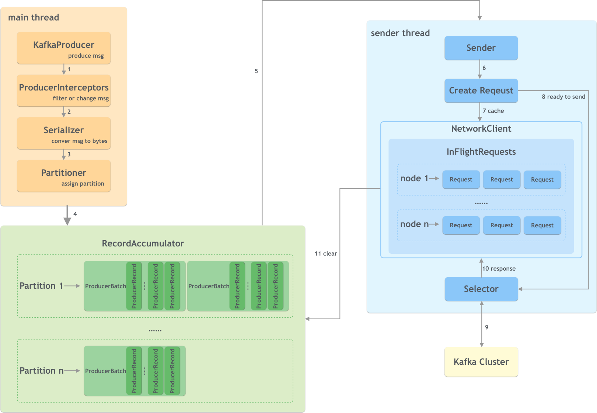
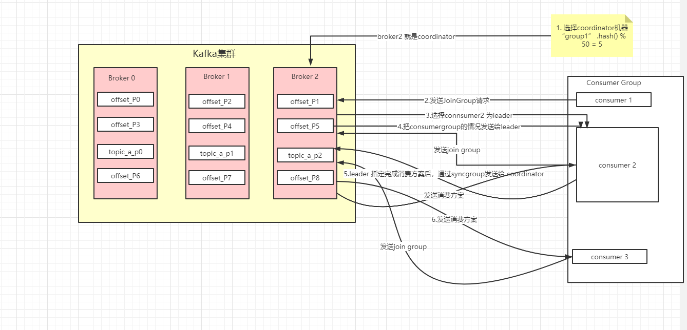
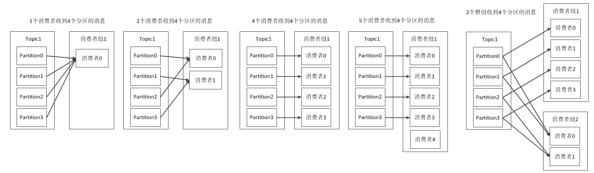

Ch02-Kafka 生产消费流程
June 22, 2018
Kafka 生产者和消费者工作流程比较复杂，需要各个组件参与才能完成。
1. 生产者 #
1.1 生产流程 #
在生产端主要有两个线程：main 和 sender，两者通过共享内存 RecordAccumulator 通信。

- KafkaProducer 创建消息；
- 生产者拦截器在消息发送之前做一些准备工作，比如过滤不符合要求的消息、修改消息的内容等；
- 序列化器将消息转换成字节数组的形式；
- 分区器计算该消息的目标分区，然后数据会存储在 RecordAccumulator 中；
- 发送线程获取数据进行发送；
- 创建具体的请求；
- 如果请求过多，会将部分请求缓存起来；
- 将准备好的请求进行发送；
- 发送到 kafka 集群；
- 接收响应；
- 清理数据。
1.2 消息发送模式 #
这种模式并不是一种配置参数，而是一种代码处理方式。
| 发送模式 | 说明 | 代码示例 |
|---|---|---|
| 发后即忘 (fire and forget) | 只管发送不管结果性能最高，可靠性也最差 | producer.send(record) |
| 同步 (sync) | 等集群确认消息写入成功再返回可靠性最高，性能差很多 | Future f = producer.send(record);T meta = f.get(); |
| 异步 (async) | 指定一个 callback，kafka 返回响应后调用来实现异步发送的确认 | producer.send(record, new Callback() {} |
与之有一个容易混淆的参数 producer.type，它表示消息发送到 broker 之后，要不要调用 flush 直接刷入到磁盘，如果设置为 sync，则表示 broker 接收到消息后直接刷盘。而 async 则表示接收到消息后不刷盘，过段时间后异步刷入。
1.3 Acks #
| acks | 说明 |
|---|---|
| 0 | 把消息发送出去，那么就认为消息已经写入成功。 |
| 1 | Leader 成功写入即表示写入成功。 |
| -1 | Leader + Replica 全部成功写入即表示写入成功。 |
2. 消费者 #
2.1 消费流程 #
kafka consumer 采用 pull（拉）模式从 broker 中读取数据。kafka 中的消息都有一个 offset 唯一标识，对于消费者来说，每消费完一个消息需要通知 kafka，这样下次拉取消息的时候才不会拉到已消费的数据（不考虑重复消费的情况）。这个消费者已消费的消息位置就是消费位移，这个 offset 被保存在名为 __consumer_offsets 的 topic 中。
与消费组相关有两个组件，一个是消费者客户端的 ConsumerCoordinator（线程），一个是 Kafka Broker 服务端的 GroupCoordinator（线程），ConsumerCoordinator 负责与 GroupCoordinator 通信确定 consumer leader，进而确定消费方案，然后由 GroupCoordinator 将消费方案下发到每个 consumer，各个 consumer 按照对应的消费方案进行消费。

- 每个 ConsumerCoordinator 通过对 groupid 取 hash 计算得到指定的 GroupCoordinator；
- 然后 GroupCoordinator 从一个 consumer group 中取出一个 consumer 作为 leader；
- GroupCoordinator 把 consumer group 情况发送给这个 consumer leader；
- 接着 consumer leader 会负责制定消费方案；
- 通过 SyncGroup 发送给 GroupCoordinator；
- 接着 GroupCoordinator 就把消费方案下发给所有的 consumer，他们会从指定的分区的 leader broker 开始进行 socket 连接和进行消息的消费；
2.2 分区分配策略 #
一个 consumer group 中有多个 consumer，一个 topic 有多个 partition，所以必然会涉及到 partition 的分配问题，即确定哪个 partition 由哪个 consumer 来消费。

| 分区分配策略 | 说明 |
|---|---|
| Range | 按照消费者的总数和分区总数进行整除运算来分配，不过是按照主题粒度的，所以可能会不均匀 |
| RoundRobin | 将消费组内所有消费者及消费者订阅的所有主题的分区按照字典序排序，然后通过轮询方式这个将分区一次分配给每个消费者。 |
| Sticky | 这个策略比较复杂，目的是分区的分配尽可能均匀，以及分配要尽可能和上次保持一致。 |
2.3 分区分配再均衡 #
以下三种现象会使 partition 的所有权在 consumer 之间转移，这样的行为叫作再均衡。
- 消费者组中新添加消费者读取到原本是其他消费者读取的消息。
- 消费者关闭或崩溃之后离开群组，原本由他读取的 partition 将由群组里其他消费者读取。
- 当向一个 Topic 添加新的 partition，会发生 partition 在消费者中的重新分配。
| 优缺点 | 说明 |
|---|---|
| 优点 | 给消费者组带来了高可用性和伸缩性 |
| 缺点 | 再均衡期间消费者无法读取消息，整个群组有一小段时间不可用 partition 被重新分配给一个消费者时，消费者当前的读取状态会丢失，有可能还需要去刷新缓存，在它重新恢复状态之前会拖慢应用程序。因此需要进行安全的再均衡和避免不必要的再均衡 |